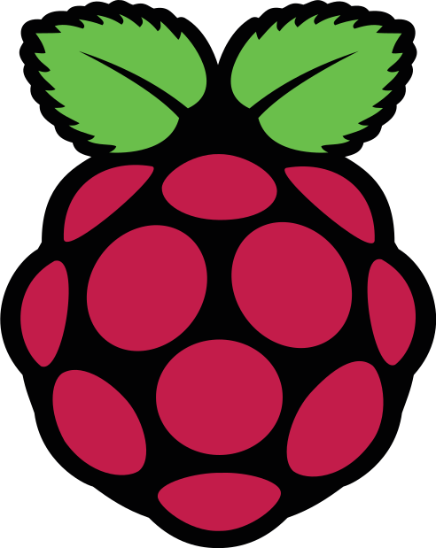

")


")


QCMCam, la web'app pour sonder avec une webcam ou un smartphone.
Copyright 2019 Sébastien COGEZ licence Apache 2.0.


Image pour Raspberry Pi réalisée par Johannes Holstein (DE)
md5 = 4064614f22b0fe8d0d1d34eb1b75a947
Questions ou remarques : contact@qcmcam.net
 Logo, création et adaptations par S. COGEZ - collège OLIBO de St Cyprien.
Logo, création et adaptations par S. COGEZ - collège OLIBO de St Cyprien.
Copyright 2019 Sébastien COGEZ licence Apache 2.0
Ce logiciel est développé de manière expérimentale. Il y a eu de nombreuses modifications depuis sa première mise en ligne en juin 2017. La dernière importante a été réalisée le 20/08/2018 où les marqueurs de base (4x4) servant à voter ont été
changés.
Il faudra donc les imprimer à nouveau pour ceux qui auraient d'anciens jeux. Ce changement est du à des problèmes de faux positifs lors des votes en classe. J'espère ne plus avoir à revenir là-dessus à l'avenir.
Si vous voulez partager vos questionnaires via la bibliothèque, ou demander des améliorations du logiciel, merci de m'écrire.
La lecture des QRVote se fait à l'aide d'une webcam ou d'un dispositif type smartphone/tablette.
Un tuto est directement accessible en cliquant sur l'icone "bouée de sauvetage".
Télécharger l'appli pour un usage local ou pour modifier ce que vous voulez.
La traduction a été en grande partie réalisée à l'aide de Deepl translator. Si vous voyez des erreurs, merci de me les signaler rapidement en fouillant dans le fichier de traduction vous correspondant :
Vidéos pour apprendre à se servir de QCMCam
Les marqueurs sont à distribuer aux participants selon le numéro indiqué dans l'application. Vous avez le choix entre :
Passer en mode 5 bits ou passer en mode 4 bits (config par défaut) ou en mode 3 bits.
Résolution de votre caméra en fullHD :
Editeur de texte en ligne : CKEditor 4 inline avec un plugin de formule KaTeX et un plugin d'upload de QCM créés par moi-même.
Icons by Aleksandra Wolska and by Pawel Kadysz.
 Logo de chargement de l'application : Ellipsis by loadding.io
Logo de chargement de l'application : Ellipsis by loadding.io
Reconnaissance des marqueurs avec JS Aruco dérivé de Aruco, un système opensource créé par des chercheurs espagnols, utilisant lui-même le logiciel opencv.
Librairie "download.js" pour télécharger le fichier des questions.
Librairie "intro.js" pour guider l'usage du site.
 La bibliothèque est adaptée du très joli et simple Cute File Browser de Tutorialzine.com
La bibliothèque est adaptée du très joli et simple Cute File Browser de Tutorialzine.com